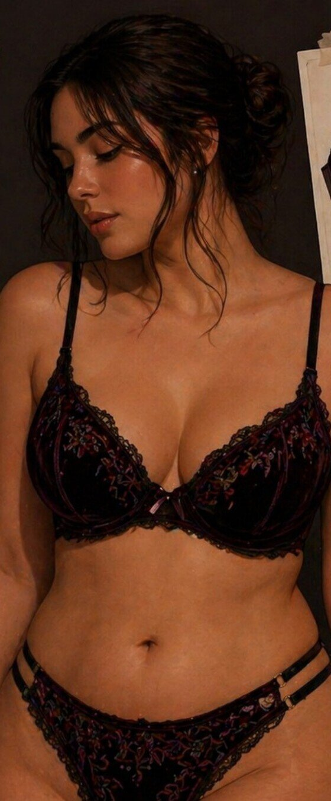
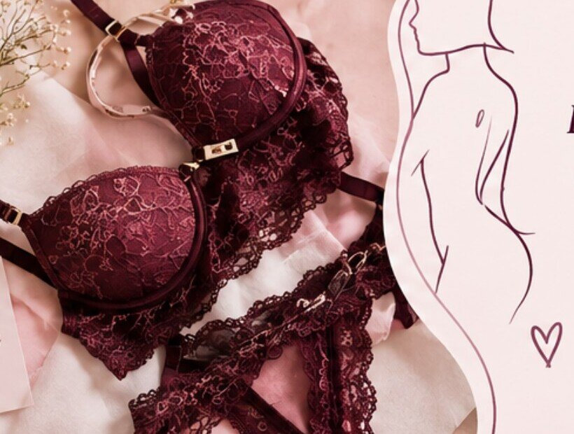
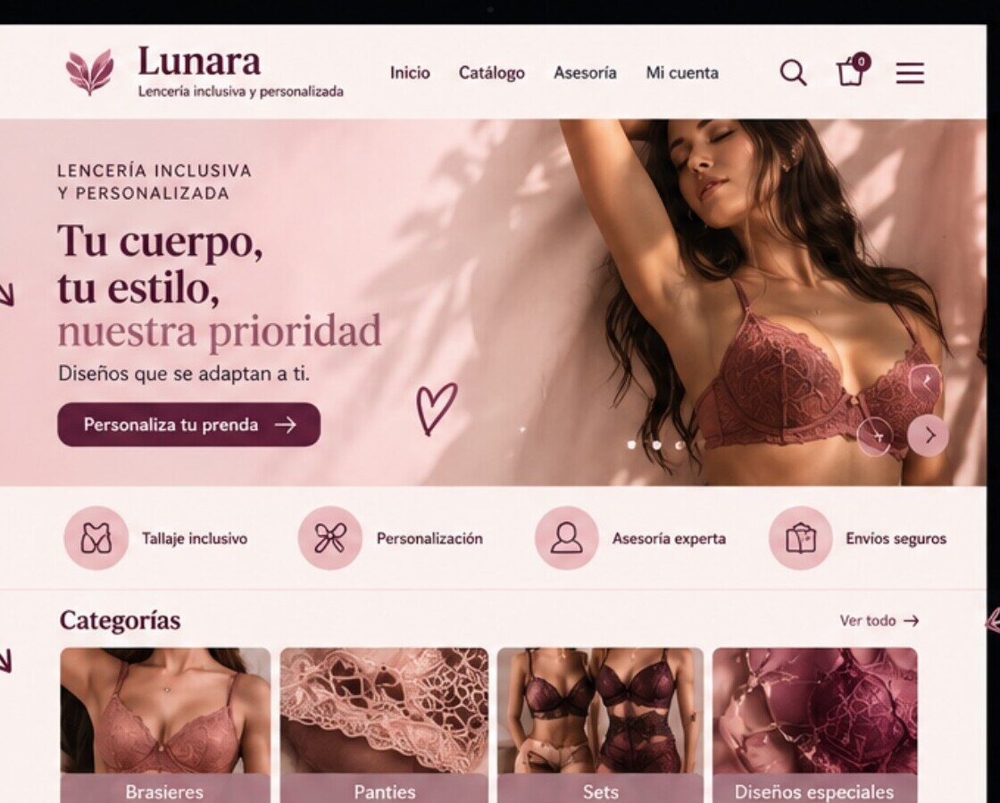
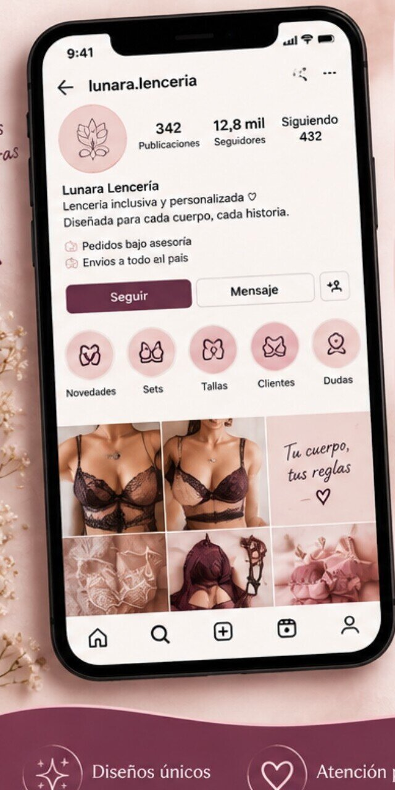

Lunara — lencería inclusiva
Diseñamos lencería a la medida de cuerpos reales: tallaje inclusivo, asesoría personalizada y producción bajo pedido, para que te sientas cómoda, segura y tú misma.

Nuestra idea
Más que una prenda íntima: una herramienta de expresión, seguridad y autoestima.
Lunara nace de una pregunta simple: ¿por qué la lencería sigue pensada para un solo tipo de cuerpo? Diseñamos cada set bajo un enfoque de inclusión, comodidad y personalización, con materiales de calidad y atención al detalle en cada acabado.
Nuestro sistema de tallaje inclusivo y la producción bajo pedido nos permiten responder con precisión a las necesidades corporales y preferencias de cada clienta, en lugar de forzar el cuerpo a encajar en una talla estándar.
A quién vestimos
Jóvenes adultas que buscan comodidad, diseño y representación, dispuestas a pagar un precio intermedio cuando perciben calidad, buen ajuste y autenticidad. Entienden la lencería como un lujo accesible y valoran poder verificar materiales y ajuste antes de comprar.
Mujeres mayores de 40 años que redescubren su sensualidad, personas en cambios corporales que necesitan acompañamiento en el ajuste, y quienes hoy desconfían de comprar lencería online por falta de asesoría y guías de talla claras.
Lo que escuchamos
Es difícil encontrar buen tallaje.
Quiero sentirme sexy pero cómoda al mismo tiempo.
Que realmente se adapte a mí.
Panorama
Marcas independientes con propuestas similares en Instagram
Marcas líderes del retail en Colombia
El 85,3% de las encuestadas aún prefiere probarse en tienda física — la confianza, no la pantalla, es la verdadera barrera que resolvemos con asesoría cercana.
Propuesta de valor
Equilibramos estética y comodidad mediante materiales adecuados, patronaje ajustado y procesos de prueba que garantizan prendas funcionales y visualmente atractivas — creadas bajo pedido para reducir errores y desperdicio.
Tallaje real, sin encasillar el cuerpo en una talla estándar.
Asesoría uno a uno para elegir diseño, tela y ajuste.
Patronaje y materiales pensados para el uso diario.
Diseño que también te hace sentir bien contigo misma.

Cómo lo hacemos
Investigamos a fondo necesidades, tallas y preferencias mediante encuestas y conversación directa en redes.
Convertimos esos hallazgos en bocetos, materiales y detalles que combinan estética, comodidad y funcionalidad.
Guiamos la toma de medidas y ajustamos el patrón a las características específicas de cada clienta.
Elegimos materiales, confeccionamos el prototipo y revisamos cada costura, acabado y talla antes de aprobar.
Empacamos con cuidado, hacemos seguimiento al envío y seguimos cerca después de la compra.
Tu experiencia de compra


Tu cuerpo, nuestro diseño
Empieza con una asesoría gratuita y encuentra la prenda pensada para tu cuerpo, tus gustos y tu historia.